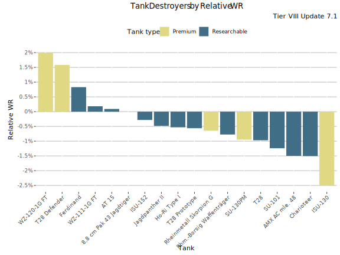
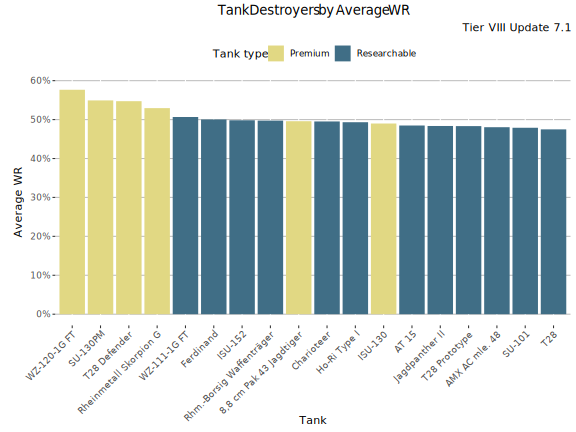
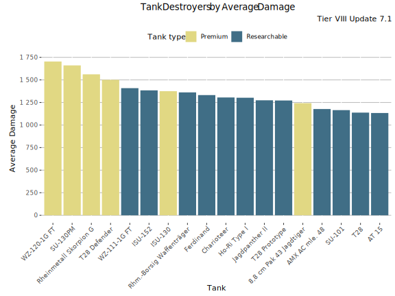
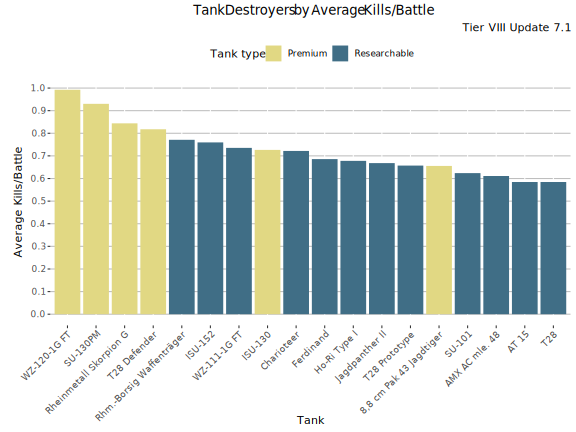
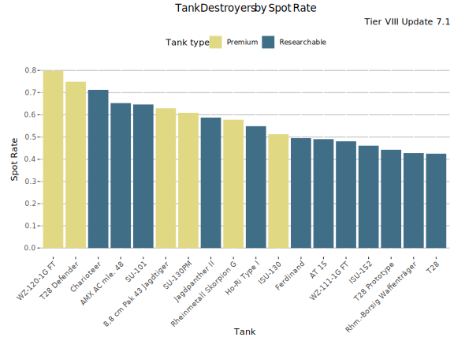
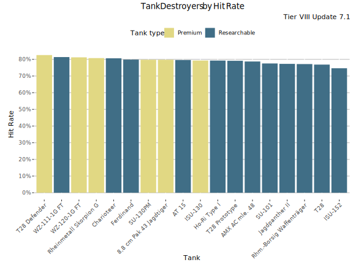
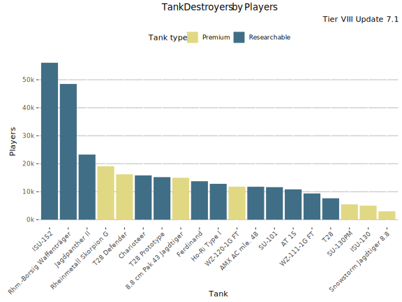
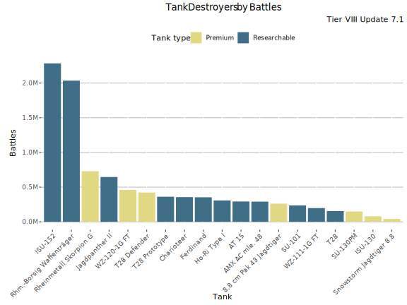

Tier VIII Tank Destroyers
All the graphs are based on battles played during update 7.1 only (not cumulative data).
The Best Performing Tanks
Highest Relative WR
The graph shows tier VIII Tank Destroyers by Relative WR. That is the average of players' WR in a tank compared to their average WR at the tier (in all same tier tanks). Relative WR is a measure of the performance/strength of the tank.

Relative WR - Table
Relative WR by player skill-level
Average WR
This graph shows tier VIII Tank Destroyers ranked by players' average WR in the tanks. Player WR denotes the tank’s players' average WR across all the tier VIII tanks during the update. Only tanks with more than 400 players are listed. This may filter out few upcoming tanks that are being tested.

Average WR - Table
Average WR denotes average WR in a tank across all the players during the update. Player WR denotes the tank’s players' average WR across all the tanks during the update.
Average Damage
This graph shows tier VIII Tank Destroyers ranked by players' average damage in the tanks.

Average Damage - Table
Average Kills/Battle
This graph shows tier VIII Tank Destroyers ranked by players' average kills per battle.

Average Kills/Battle - Table
Spot Rate
This graph shows tier VIII Tank Destroyers ranked by players' spot rate in the tanks.

Spot Rate - Table
Hit Rate
This graph shows tier VIII Tank Destroyers ranked by players' hit rate in the tanks.

Hit Rate - Table
Most popular Tanks
This graph shows most popular tier VIII Tank Destroyers tanks by players.

Most played Tanks
This graph shows the most played tanks by number of battles during the update 7.1.

Most Played Tanks - Table
-

This work is licensed under a Creative Commons Attribution-ShareAlike 4.0 International License.
-

-

Blitzanalysiz() is a player-created website for World of Tanks: Blitz and developed in accordance with WG DPP. This site is not an official Wargaming or World of Tanks: Blitz website. World of Tanks Blitz and Wargaming are trademarks of Wargaming.net Limited. Game content and materials copyright © Wargaming.net. All rights reserved.